20+ Tahun Membimbing Ribuan Profesional & Eksekutif Mencapai Potensi Mental Maksimal
Dari pengamanan security WTC Jakarta, pemulihan eksekutif dari krisis depresi, hingga peningkatan drastis performa tim sales korporat—kami membuktikan bahwa transformasi sikap mental nyata selalu menghasilkan lonjakan kinerja yang berkelanjutan.
Tahun Pengalaman
Peserta Terlatih
Klien Korporat & BUMN
Lembaga Terpercaya yang Memahami Akar Tantangan Mentalitas & Produktivitas Anda
KPPSM (Klinik Pengembangan Psikologi Sikap Mental) adalah lembaga pelatihan dan konsultasi SDM yang berfokus mendalam pada transformasi mentalitas profesional, jajaran manajemen, serta pimpinan organisasi.
Dengan pengalaman lebih dari dua dekade, kami telah mendampingi ribuan individu dan puluhan entitas bisnis terkemuka—mulai dari BUMN, korporasi swasta multinasional, hingga koperasi mitra—dalam menyelesaikan konflik internal, mengatasi burnout, dan mencetak budaya kerja berkinerja tinggi.
Menjadi lembaga terdepan dalam pengembangan sikap mental positif yang melahirkan generasi profesional Indonesia bermental juara, tangguh, berintegritas, dan sejahtera.
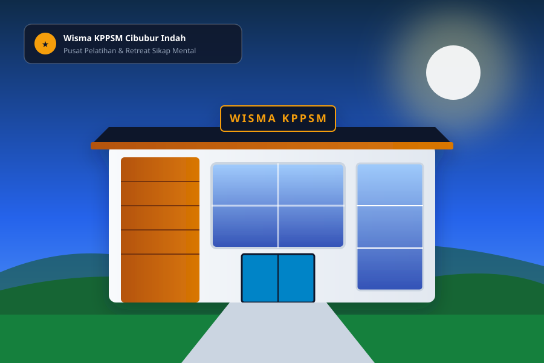
Komp. Cibubur Indah 3 Blok F-7, Jakarta Timur
Fondasi utama dalam setiap modul pembinaan dan intervensi psikologis kami
Menyentuh sisi kemanusiaan terdalam dengan pendekatan empati, memahami latar belakang dan menghargai keunikan tiap individu.
Mengadopsi riset psikologi perilaku modern, neuro-leadership, dan studi kasus mutakhir yang aplikatif di dunia kerja nyata.
Setiap program dirancang berdasarkan data riil, evaluasi pre-post test objektif, dan rekam jejak keberhasilan 20+ tahun.
Bekerja berdampingan dengan manajemen dan serikat pekerja untuk menciptakan ekosistem kerja harmonis dan berkelanjutan.
Tatag Utomo, M.M., M.Si. — Praktisi & Pioneer Revolusi Mental Indonesia
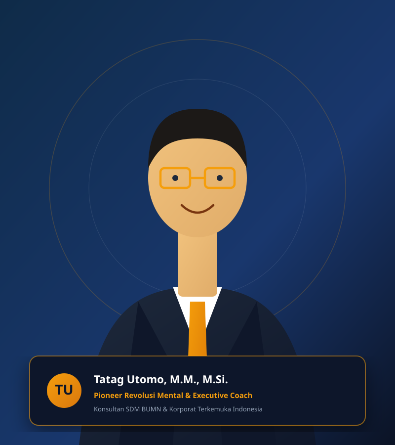
Tatag Utomo adalah pendiri dan pakar utama KPPSM dengan latar belakang pendidikan ganda: Magister Manajemen (M.M.) dan Magister Sains Psikologi (M.Si.). Kombinasi keilmuan bisnis dan psikologi ini memberikan perspektif unik yang sangat tajam dalam menyelesaikan disfungsi organisasi.
Selama lebih dari 20 tahun, beliau telah dipercaya menjadi penasihat strategis oleh jajaran direksi BUMN, konglomerasi nasional, dan organisasi serikat buruh dalam mengelola tensi kerja, memulihkan motivasi karyawan, dan menyelaraskan target bisnis dengan kesejahteraan mental pekerja.
Mencegah eskalasi demonstrasi personel keamanan melalui komunikasi humanis & de-eskalasi tepat sasaran.
Program pemberdayaan etika bisnis dan peningkatan kapasitas SDM ribuan anggota koperasi mitra.
Membangun jembatan komunikasi harmonis dan hubungan industrial damai berkelanjutan dengan SPSI.
Menumbuhkan *growth mindset* dan motivasi kerja hingga berhasil mencapai target produksi 1 Juta Ton CPO.
Program Terstruktur & Terintegrasi untuk Transformasi Kinerja SDM Perusahaan Anda
"Saat Komunikasi Tersumbat, Target Bisnis Melorot"
Memulihkan sinergi antara divisi sales garis depan dengan jajaran manajemen. Menghilangkan friksi, menurunkan turnover, dan mendongkrak pencapaian kuota penjualan secara konsisten.
"Redam Letupan Sebelum Menjadi Krisis Terbuka"
Metode intervensi dini untuk memitigasi potensi aksi mogok kerja, sabotase, atau demonstrasi karyawan melalui dialog psikologis konstruktif dan pemetaan akar kekecewaan.
"Koperasi Mitra yang Sehat Fondasi Rantai Pasok Kuat"
Program edukasi sikap mental mandiri, literasi finansial, etika bisnis, dan tata kelola profesional bagi koperasi mitra perkebunan, manufaktur, maupun logistik korporat.
"Harmoni Kerja Kunci Utama Kelancaran Operasional"
Menjembatani kepentingan pimpinan perusahaan dengan serikat buruh (SPSI/organisasi buruh) melalui sudut pandang *mutual benefit*, menjaga iklim investasi dan kenyamanan berkarya.
"Pulihkan Pimpinan Eksekutif dari Tekanan Berat"
Konseling privat dan *behavioral therapy coaching* khusus bagi level C-suite, direktur, dan manajer senior yang mengalami sindrom depresi, kecemasan akut, atau sindrom kelelahan mental (*burnout*).
"Dobrak Mental Block untuk Menggapai Target Ambisius"
Membangun etos kerja bermental juara dan pantang menyerah. Membantu perusahaan melampaui rekor target produksi melalui rekayasa sikap mental terstruktur dan antusiasme kolektif.
Kumpulan Panduan Transformasi Mentalitas yang Diterbitkan Resmi oleh PT. Grassindo (Kompas Gramedia Group)
Keempat buku ini lahir dari sari pati riset psikologi terapan dan pengalaman nyata Pak Tatag Utomo mendampingi puluhan ribu profesional. Menjadi referensi wajib bagi para pimpinan perusahaan, praktisi HRD, akademisi, dan orang tua.
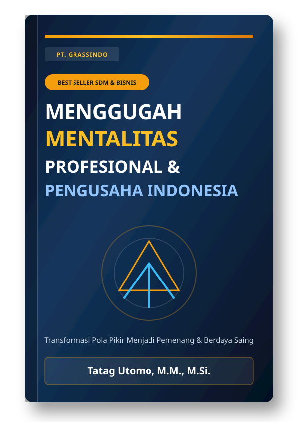
Panduan komprehensif mengubah pola pikir dari sekadar mentalitas pekerja biasa menjadi mentalitas pengusaha berkarakter unggul, berinisiatif tinggi, dan tangguh menghadapi badai perubahan bisnis.
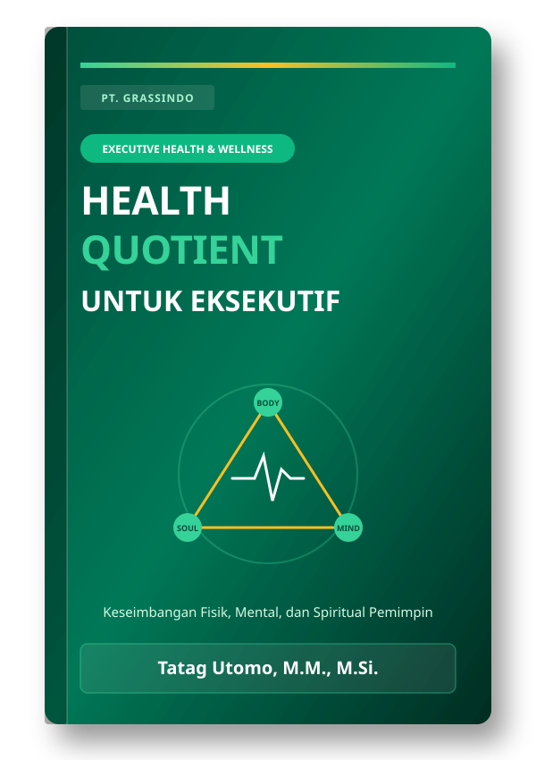
Karya esensial bagi eksekutif berjam kerja padat. Mengintegrasikan kesehatan fisik (*body*), ketangguhan psikologis (*mind*), dan kedamaian batin (*soul*) dalam prinsip *holistic executive wellness*.
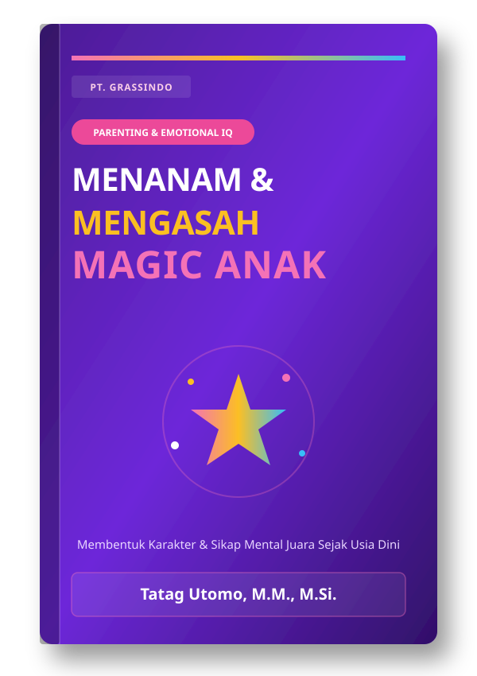
Panduan berharga bagi orang tua dan tenaga pendidik untuk mendeteksi bakat terpendam anak, melatih kematangan kecerdasan emosional (EQ), serta membangun mental tangguh sejak usia dini.
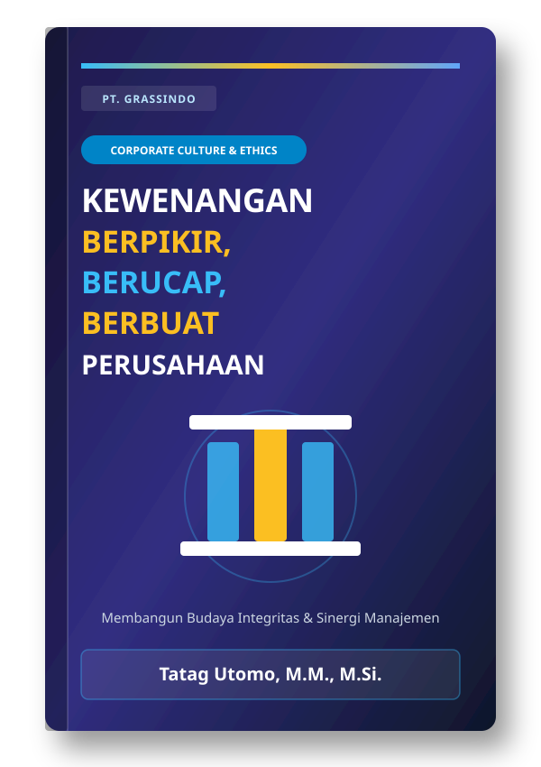
Ulasan filosofis dan praktis mengenai batas etika, tanggung jawab moral, dan sinkronisasi antara ucapan dan tindakan di seluruh lini hierarki organisasi modern.
Melihat Suasana Pelatihan, Fasilitas Wisma, dan Momen Transformasi Bersama Klien Kami
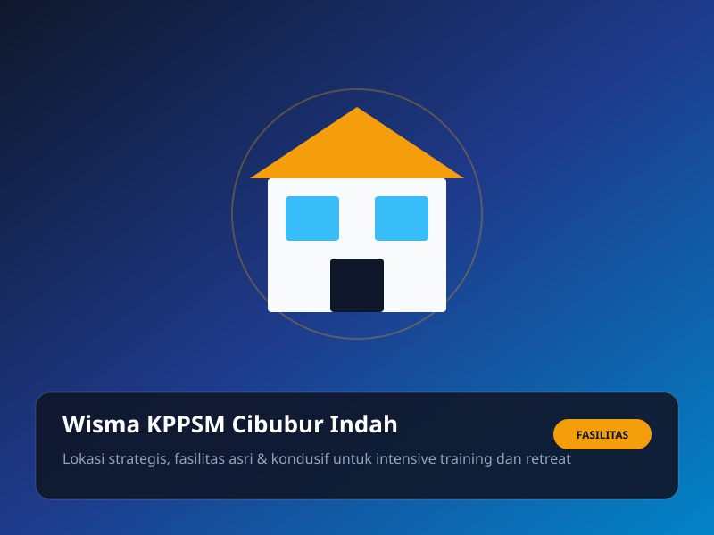
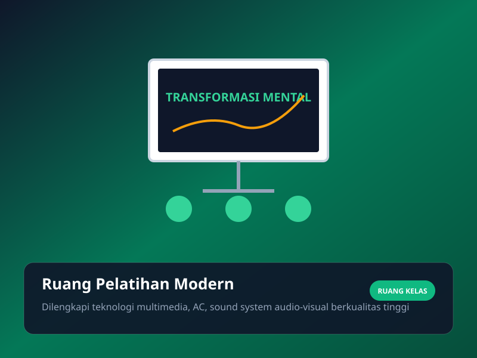
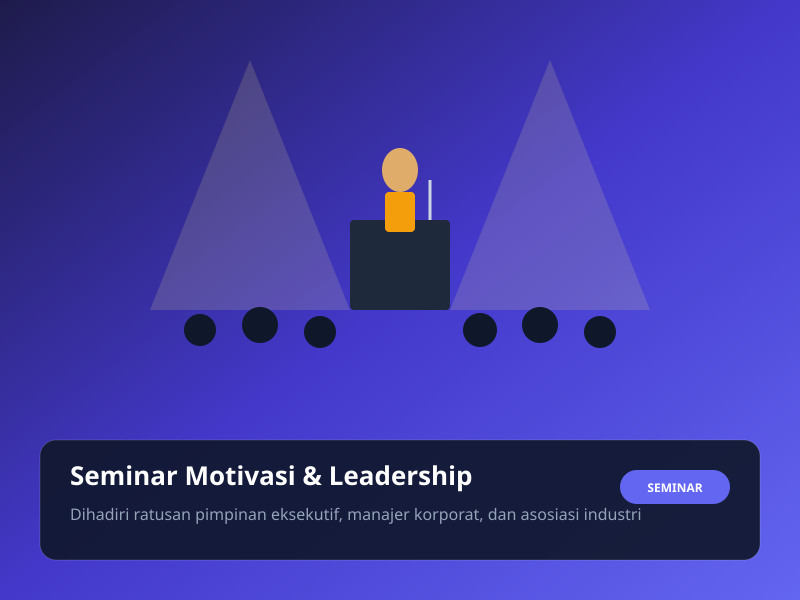
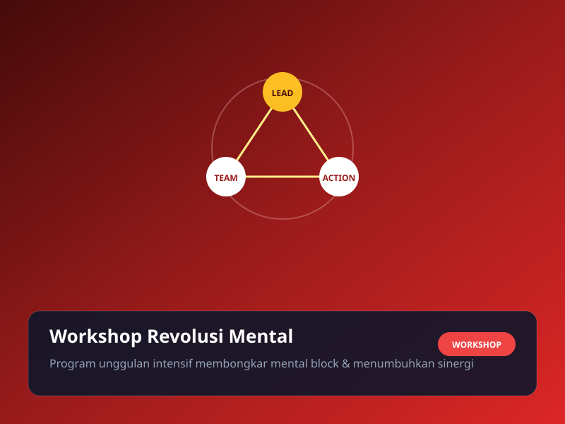
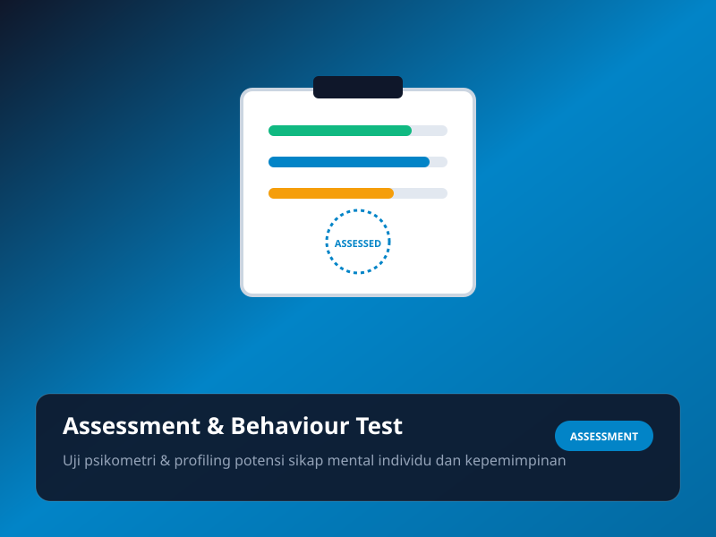
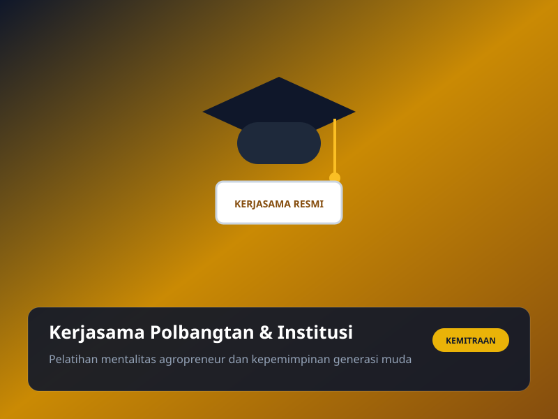
Dengarkan Pengalaman Nyata Para Pimpinan Perusahaan yang Telah Merasakan Dampak Positif Pendampingan KPPSM
Memuat ulasan testimoni...
"Pelatihan dari KPPSM benar-benar mengubah cara saya memimpin tim. Dari yang tadinya authoritarian, sekarang saya lebih humanis namun tetap achieve target. Tim jadi jauh lebih solid dan produktif."
"Pak Tatag membantu saya keluar dari depresi dan tekanan kerja berat. Tidak hanya teori, terapi dan mindset coaching-nya sangat praktikal dan langsung memulihkan stabilitas emosional saya."
"Program KPPSM untuk tim sales kami menghasilkan lonjakan performa 85% dalam 3 bulan. Mindset tim berubah dari yang tadinya terbebani target menjadi antusias dan bermental juara."
Konsultasi Awal Bebas Biaya. Pak Tatag Utomo & Tim Siap Mendiskusikan Kebutuhan Spesifik Organisasi Anda.
Silakan hubungi kami melalui saluran berikut untuk respon cepat dari staf representatif kami:
Wisma KPPSM, Komp. Cibubur Indah 3 Blok F-7, Jakarta Timur, DKI Jakarta
Isi formulir singkat ini dan kami akan menyiapkan rekomendasi solusi awal: